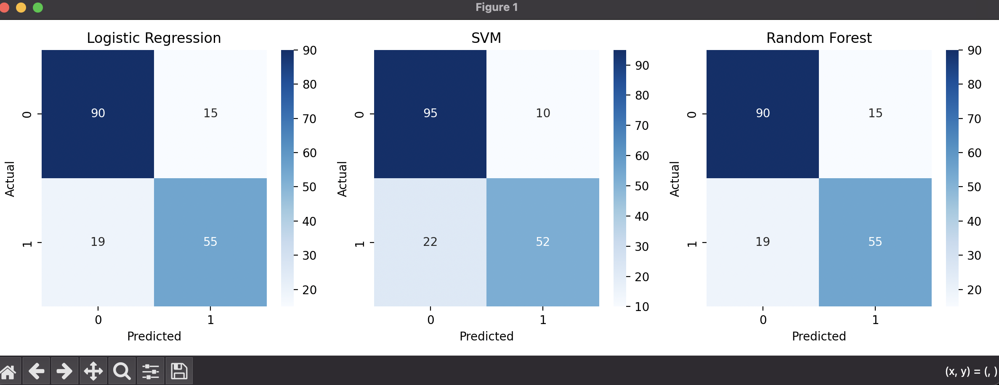

Comparative Evaluation of Logistic Regression, Random Forest, and SVM Models
| Model | Accuracy | TP | TN | FP | FN |
|---|---|---|---|---|---|
| Logistic Regression | 0.81 | 55 | 90 | 15 | 19 |
| SVM | 0.82 | 52 | 95 | 10 | 22 |
| Random Forest | 0.81 | 55 | 90 | 15 | 19 |

The Support Vector Machine achieved the highest accuracy, Logistic Regression provided the most stable probability estimates, and Random Forest captured nonlinear relationships effectively. This comparison helps illustrate how different algorithms behave on the same dataset and why model selection matters.